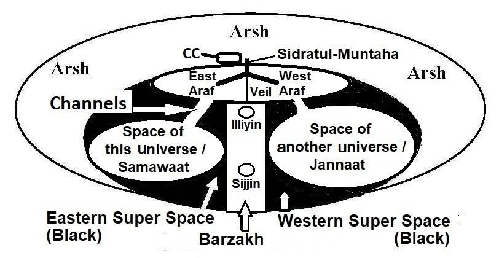

[The Army of Abraha was destroyed near Makkah in the year Prophet Muhammad (pbuh) was born] However, the precinct of Temple Mount is blessed, ―Glory to (God) Who did take His servant for a Journey by night from the Sacred Mosque to the Farthest Mosque, whose precincts We did bless…‖ [Al Quran 17:1] And it had been our Qiblah for some times before the Ummah was formed. Thus, be Baptized by Allah and come to Kaaba. The Kaaba bears the clear signs of spirituality. It is called the House of Weeping; even a heart of iron melts in Kaaba. It is understood once one visits it.
[হযরত মুহাম্মদ (সাঃ) যে বছর জন্মগ্রহণ করেছিলেন সেই বছর মক্কার কাছে আবরাহার সেনাবাহিনী ধ্বংস হয়েছিল] তবে, টেম্পল মাউন্টের চৌহদ্দি ধন্য, - গৌরব (ঈশ্বর) যিনি তাঁর বান্দাকে রাতে পবিত্র মসজিদ থেকে দূরতম মসজিদে যাত্রার জন্য নিয়ে গিয়েছিলেন, যার আশেপাশে আমরা আমাদের আশীর্বাদ করেছি ... উম্মাহ গঠনের পূর্বে। এভাবে আল্লাহর কাছে দীক্ষিত হয়ে কাবা শরীফে আসুন। কাবা আধ্যাত্মিকতার স্পষ্ট নিদর্শন বহন করে। একে হাউস অফ উইপিং বলা হয়; এমনকি কাবার একটি লোহার হৃদয়ও গলে যায়। একবার দেখলেই বোঝা যায়।
O you who believe, if you listen to a faction among the People of the Book, they would render you apostate after you have believed! And how would you deny faith while unto you are rehearsed the verses of Allah and among you live the Apostle? Whoever holds firmly to Allah will be shown a way that is straight. O you who believe! Guard for the sake of Allah—truth to be guarded, and die not except as Muslims. And hold fast all together to the rope of Allah, and be not divided among yourselves, and remember with gratitude Allah's favor on you—for you were enemies and He joined your hearts in love so that by His grace you became brethren; and you were on the brink of the pit of fire, and He saved you from it. Thus, does Allah make His signs clear to you that you may be guided. Let there arise out of you a band of people inviting to all that is good, enjoining what is right, and forbidding what is wrong—they are the ones to attain felicity. Be not like those who are divided among themselves and fall into disputations after receiving clear signs—for them is a dreadful penalty. On the Day when some faces will be white, and some faces will be black—to those whose faces will be black: "Did you reject Faith after accepting it; taste then the penalty for rejecting Faith!" But those whose faces will be white, they will be in Allah's mercy; therein to dwell. These are the verses of Allah. We rehearse them to you in Truth, and Allah means no injustice to any of His creatures. To Allah belongs all that is in the Skies and on Lands. To Him do all questions go back.
হে মুমিনগণ, যদি তোমরা আহলে কিতাবদের মধ্যে একটি দলকে শুনো, তবে তারা তোমাদের ঈমান আনার পর মুরতাদ করে দেবে! আর কিভাবে তোমরা ঈমানকে অস্বীকার করবে যখন তোমাদের কাছে আল্লাহর আয়াত পাঠ করা হচ্ছে এবং তোমাদের মধ্যে রসূল (সা.) বেঁচে আছেন? যে ব্যক্তি আল্লাহকে দৃঢ়ভাবে ধারণ করবে তাকে সরল পথ দেখানো হবে। হে ঈমানদারগণ! আল্লাহর সন্তুষ্টির জন্য হেফাজত করুন-সত্যকে হেফাজত করতে হবে এবং মুসলিম না হয়ে মৃত্যুবরণ করবেন না। এবং সকলে মিলে আল্লাহর রজ্জুকে শক্ত করে ধরে থাক এবং নিজেদের মধ্যে বিভক্ত হয়ো না এবং আল্লাহর অনুগ্রহকে কৃতজ্ঞতা সহকারে স্মরণ কর, কারণ তোমরা শত্রু ছিলে এবং তিনি তোমাদের অন্তরে ভালোবাসায় মিলিত হয়েছিলেন যাতে তাঁর অনুগ্রহে তোমরা ভাই-ভাই হয়েছ। এবং আপনি আগুনের গর্তের ধারে ছিলেন এবং তিনি আপনাকে তা থেকে রক্ষা করেছিলেন। এভাবেই আল্লাহ তাঁর নিদর্শনাবলী তোমাদের জন্য সুস্পষ্ট করে দেন যাতে তোমরা সৎপথে চলতে পার। তোমাদের মধ্যে থেকে এমন একদল লোকের উদ্ভব হোক যারা ভালো কিছুর প্রতি আহবান করবে, সৎ কাজের আদেশ করবে এবং অন্যায়কে নিষেধ করবে- তারাই সুখী হবে। তাদের মত হয়ো না যারা নিজেদের মধ্যে বিভক্ত হয়ে পড়ে এবং স্পষ্ট নিদর্শন পাওয়ার পর বিতর্কে পড়ে, তাদের জন্য রয়েছে ভয়াবহ শাস্তি। যেদিন কিছু মুখ হবে সাদা, আর কিছু মুখ কালো- যাদের মুখ কালো হবে, "তোমরা কি ঈমান গ্রহণ করার পর তা প্রত্যাখ্যান করেছিলে; তাহলে ঈমান প্রত্যাখ্যানের শাস্তি আস্বাদন কর!" কিন্তু যাদের মুখ সাদা হবে, তারা আল্লাহর রহমতে থাকবে; সেখানে বসবাস করার জন্য। এগুলো আল্লাহর আয়াত। আমরা আপনার কাছে সেগুলি সত্যের সাথে শুনাচ্ছি, এবং আল্লাহ তার কোন সৃষ্টির প্রতি অবিচার করবেন না। আসমান ও জমিনে যা কিছু আছে সবই আল্লাহর। তাঁর কাছে সমস্ত প্রশ্ন ফিরে যান।
In above verses, Muslims are given three guidelines to counter the aggression of Christians. 1. In the first paragraph, it is suggested: Do not listen to them. 2. In the second paragraph, it is suggested: Be proper Muslim and hold fast all together the rope of Allah—remain united. 3. In the third paragraph, it is suggested that there should arise a band of people inviting to all that is good and forbidding what is wrong. So, keep people in religious order through the Mosques at community / village level. These are the Rules of Thumb to counter political, cultural, and religious aggressions of the People of the Book. Segment 3 Preparing Muslims to confront the Byzantine Empire
উপরের আয়াতগুলিতে, খ্রিস্টানদের আগ্রাসন মোকাবেলায় মুসলমানদের তিনটি নির্দেশিকা দেওয়া হয়েছে। 1. প্রথম অনুচ্ছেদে, এটি পরামর্শ দেওয়া হয়েছে: তাদের কথা শুনবেন না। 2. দ্বিতীয় অনুচ্ছেদে পরামর্শ দেওয়া হয়েছে: সঠিক মুসলিম হোন এবং আল্লাহর রজ্জুকে দৃঢ়ভাবে আঁকড়ে ধরুন- ঐক্যবদ্ধ থাকুন। 3. তৃতীয় অনুচ্ছেদে, পরামর্শ দেওয়া হয়েছে যে এমন একটি দল গড়ে উঠতে হবে যা ভাল জিনিসের প্রতি আমন্ত্রণ জানায় এবং যা খারাপ তা নিষেধ করে। তাই, সম্প্রদায়/গ্রাম পর্যায়ে মসজিদের মাধ্যমে মানুষকে ধর্মীয় শৃঙ্খলায় রাখুন। এগুলি হল আহলে কিতাবদের রাজনৈতিক, সাংস্কৃতিক এবং ধর্মীয় আগ্রাসন মোকাবেলা করার নিয়ম। সেগমেন্ট 3 মুসলমানদের বাইজেন্টাইন সাম্রাজ্যের মোকাবিলা করার জন্য প্রস্তুত করা
The Third Segment aims to prepare Muslims to confront the Great Byzantine Empire.
তৃতীয় সেগমেন্টের লক্ষ্য হচ্ছে মহান বাইজেন্টাইন সাম্রাজ্যের মোকাবিলায় মুসলমানদের প্রস্তুত করা।
You are the best of peoples, evolved for mankind, enjoining what is right, forbidding what is wrong, and believing in Allah. If only the People of the Book had faith, it was best for them; among them are some who have faith, but most of them are perverted transgressors. They will do you no harm, barring a trifling annoyance. If they come out to fight you, they will show you their backs, and no help shall they get. Shame is pitched over them wherever they are found, except when under a covenant from Allah and from men. They draw on themselves wrath from Allah and pitched over them is destitution. This is because they rejected the verses of Allah and slew the Prophets in defiance of right; this is because they rebelled and transgressed beyond bounds. Not all of them are alike. Of the People of the Book is a portion that stands, they rehearse the verses of Allah all night long, and they prostrate themselves in adoration. They believe in Allah and the Last Day, they enjoin what is right and forbid what is wrong, and they hasten in good works. They are in the ranks of the righteous. Of the good that they do, nothing will be rejected of them; for Allah know well those that do right. Those who reject Faith, neither their possessions, nor their progeny will avail them aught against Allah. They will be companions of the Fire dwelling therein. What they spend in the life of this world may be likened to a wind, which brings a nipping frost; it strikes and destroys the harvest of men who have wronged their own souls. It is not Allah that has wronged them, but they wrong themselves.
তোমরা সর্বোত্তম জাতি, মানবজাতির জন্য বিকশিত, সৎ কাজের আদেশকারী, অন্যায়কে নিষেধকারী এবং আল্লাহর প্রতি বিশ্বাস স্থাপনকারী। আহলে কিতাবরা যদি ঈমান আনত তবে তা তাদের জন্য উত্তম ছিল। তাদের মধ্যে কেউ কেউ ঈমানদার, কিন্তু তাদের অধিকাংশই বিকৃত সীমালঙ্ঘনকারী। তারা আপনার কোন ক্ষতি করবে না, সামান্য বিরক্তি ব্যতীত। যদি তারা আপনার সাথে যুদ্ধ করতে আসে তবে তারা আপনাকে তাদের পিঠ দেখাবে এবং তারা কোন সাহায্য পাবে না। তারা যেখানেই পাওয়া যায় সেখানেই তাদের লজ্জায় ঢেকে ফেলা হয়, আল্লাহর পক্ষ থেকে এবং মানুষের কাছ থেকে একটি চুক্তি ছাড়া। তারা নিজেদের উপর আল্লাহর গজব পোষণ করে এবং তাদের উপর নিঃস্ব হয়ে পড়ে। এটা এজন্য যে, তারা আল্লাহর আয়াতকে প্রত্যাখ্যান করেছে এবং নবীদেরকে হত্যা করেছে হকের বিরুদ্ধে। কারণ তারা বিদ্রোহ করেছিল এবং সীমা অতিক্রম করেছিল। তাদের সবাই একরকম নয়। আহলে কিতাবদের মধ্যে একটি অংশ দাঁড়িয়ে আছে, তারা সারা রাত আল্লাহর আয়াত পাঠ করে এবং তারা সিজদা করে। তারা আল্লাহ ও শেষ দিনে বিশ্বাস করে, তারা সৎ কাজের আদেশ করে এবং অন্যায় কাজে নিষেধ করে এবং সৎকাজে ত্বরান্বিত করে। তারা ধার্মিকদের কাতারে রয়েছে। তারা যে ভাল কাজ করে তার কোন কিছুই প্রত্যাখ্যাত হবে না; কেননা যারা সৎকর্ম করে আল্লাহ তাদের ভালো করেই জানেন। যারা ঈমানকে প্রত্যাখ্যান করে, তাদের ধন-সম্পদ ও বংশধর আল্লাহর কাছে তাদের কোন কাজে আসবে না। তারা সেখানে বাসকারী জাহান্নামের সঙ্গী হবে। তারা পার্থিব জীবনে যা ব্যয় করে তা একটি বাতাসের সাথে তুলনা করা যেতে পারে, যা একটি স্তূপাকার হিম নিয়ে আসে; যারা তাদের নিজেদের আত্মার প্রতি জুলুম করেছে তাদের ফসলকে আঘাত করে এবং ধ্বংস করে। আল্লাহ তাদের প্রতি জুলুম করেননি, বরং তারা নিজেদের প্রতি জুলুম করে।
O you who believe! Take not into your intimacy those outside your ranks; they will not fail to corrupt you. They only desire your ruin, rank hatred has already appeared from their mouths, what their hearts conceal is far worse. We have made plain to you the verses, if you have wisdom. Ah! You are those who love them, but they love you not; though you believe in the whole of the Book. When they meet you, they say, "We believe." But when they are alone, they bite off the very tips of their fingers at you in their rage. Say: "Perish in you rage; Allah know well all the secrets of the heart". If aught that is good befalls you, it grieves them; but if some misfortune overtakes you, they rejoice at it. But if you are patience in guarding, not the least harm will their plot do to you; for Allah compass round about all that they do.
হে ঈমানদারগণ! আপনার পদমর্যাদার বাইরের লোকদের ঘনিষ্ঠতার মধ্যে নিবেন না; তারা আপনাকে কলুষিত করতে ব্যর্থ হবে না। তারা কেবল আপনার সর্বনাশ কামনা করে, তাদের মুখ থেকে ইতিমধ্যে পদবিদ্বেষ প্রকাশ পেয়েছে, তাদের অন্তর যা গোপন করে তা আরও খারাপ। আমি তোমাদের জন্য আয়াতসমূহ সুস্পষ্টভাবে বর্ণনা করেছি, যদি তোমরা জ্ঞানী হও। আহ! তুমি তাদের যারা ভালোবাসে, কিন্তু তারা তোমাকে ভালোবাসে না; যদিও আপনি পুরো কিতাব বিশ্বাস করেন। যখন তারা তোমার সাথে সাক্ষাৎ করে তখন বলে, আমরা ঈমান এনেছি। কিন্তু যখন তারা একা থাকে, তখন তারা তাদের রাগে আপনার দিকে তাদের আঙুলের ডগা কামড়ে দেয়। বল, “তোমরা ক্রোধে বিনষ্ট হও, আল্লাহ অন্তরের সমস্ত গোপন কথা জানেন”। যদি তোমার কোন মঙ্গল হয়, তবে তা তাদের দুঃখ দেয়; কিন্তু যদি কোন দুর্ভাগ্য তোমাকে অতিক্রম করে, তারা তাতে আনন্দিত হয়। কিন্তু যদি তুমি পাহারা দিতে ধৈর্য ধর, তবে তাদের চক্রান্ত তোমার কোন ক্ষতি করবে না; কারণ তারা যা কিছু করে তার চারিদিকে আল্লাহ কম্পন করেন।
Jews are a dynamic and intelligent race. And among the Christians, there are races that are genetically higher than other races, such as Greeks, Germans, British, French, Spanish, etc. They have white skins, well-built physiques, intelligent brains, and active natures. They crossed the oceans with wooden boats and settled in far-flung corners of the world hundreds of years ago. They reached the Moon decades back. They have greatly developed in Science and Technology. They are very much capable to influence anybody. So, it is said in the verse of the first paragraph, ―They will not fail to corrupt you.‖ So, the Rule of Thumb is: ―Take not into your intimacy those outside your ranks‖. Holy Bible is meant for the Jews. Holy Bible never says that do not take Awliya (friend, protector, helper and guide) from outside, because if a Jews take Awliya from outside, the Awliya are in the thick soup, not the Jews. But the Muslims are counted in billions and there are multifarious types with utter simplicity, so the Quran has repeatedly said not to take Awliya from outside.
ইহুদিরা একটি গতিশীল এবং বুদ্ধিমান জাতি। এবং খ্রিস্টানদের মধ্যে, এমন কিছু জাতি রয়েছে যেগুলি অন্যান্য জাতিগুলির তুলনায় জেনেটিক্যালি উচ্চতর, যেমন গ্রীক, জার্মান, ব্রিটিশ, ফ্রেঞ্চ, স্প্যানিশ ইত্যাদি। তাদের সাদা চামড়া, সুগঠিত দেহ, বুদ্ধিমান মস্তিষ্ক এবং সক্রিয় প্রকৃতি রয়েছে। তারা কাঠের নৌকায় করে সাগর পাড়ি দিয়ে শত শত বছর আগে পৃথিবীর দূর-দূরান্তে বসতি স্থাপন করেছিল। তারা চাঁদে পৌঁছেছে কয়েক দশক আগে। তারা বিজ্ঞান ও প্রযুক্তিতে ব্যাপক উন্নয়ন করেছে। তারা যে কাউকে প্রভাবিত করতে অনেক বেশি সক্ষম। সুতরাং, প্রথম অনুচ্ছেদের আয়াতে বলা হয়েছে, "তারা আপনাকে কলুষিত করতে ব্যর্থ হবে না।" সুতরাং, থাম্বের নিয়মটি হল: "আপনার পদের বাইরের লোকদের ঘনিষ্ঠতার মধ্যে নিবেন না"। পবিত্র বাইবেল ইহুদিদের জন্য বোঝানো হয়েছে। পবিত্র বাইবেল কখনই বলে না যে আউলিয়া (বন্ধু, রক্ষক, সাহায্যকারী এবং পথপ্রদর্শক) বাইরে থেকে নেবেন না, কারণ যদি একজন ইহুদি আউলিয়াকে বাইরে থেকে নেয় তবে আউলিয়ারা মোটা স্যুপে থাকে, ইহুদিরা নয়। কিন্তু মুসলমানরা কোটি কোটিতে গণনা করা হয় এবং সম্পূর্ণ সরলতার সাথে বহুবিধ প্রকার রয়েছে, তাই কুরআন বারবার বলেছে বাইরে থেকে আউলিয়া না নিতে।
Remember that morning you did leave your household to post the faithful at their stations for battle; and Allah hears and knows all things. Remember two of your parties meditated cowardice, but Allah was their protector; and in Allah should the faithful put their trust. Allah had helped you at Badr, when you were a contemptible little force; then guard for the sake of Allah, so that you may show your gratitude. Remember you said to the Faithful: "Is it not enough for you that Allah should help you with three thousand angels sent down?‖ Yea, if you remain firm and guard for the sake of Alah, even if the enemy should rush here on you in hot haste, your Lord would help you with five thousand angels making a terrific onslaught. Allah made it but a message of hope for you and an assurance to your hearts—there is no help except from Allah, the Exalted, the Wise; that He might cut off a fringe of the Unbelievers or expose them to infamy, and they should then be turned back frustrated of their purpose. Not for you is the decision whether He turns in mercy to them or punishes them; for they are indeed wrongdoers. To Allah belongs all that is in the Skies and on Lands; He forgives whom He pleases and punishes whom He pleases; but Allah is Oft-Forgiving, Most Merciful.
মনে রাখবেন যে সকালে আপনি যুদ্ধের জন্য বিশ্বস্তদের তাদের স্টেশনে পোস্ট করার জন্য আপনার পরিবার ছেড়েছিলেন; আর আল্লাহ সবকিছু শোনেন ও জানেন। মনে রেখো তোমাদের দুই দল কাপুরুষতার ধ্যান করেছিল, কিন্তু আল্লাহ তাদের রক্ষাকর্তা ছিলেন; আর ঈমানদারদের আল্লাহর উপর ভরসা করা উচিত। বদরের যুদ্ধে আল্লাহ তোমাকে সাহায্য করেছিলেন, যখন তুমি ছিলে তুচ্ছ শক্তি; তাহলে আল্লাহর সন্তুষ্টির জন্য হেফাজত কর, যাতে তোমরা কৃতজ্ঞতা প্রকাশ করতে পার। মনে রাখবেন আপনি বিশ্বস্তকে বলেছিলেন: "আপনার জন্য কি যথেষ্ট নয় যে আল্লাহ আপনাকে তিন হাজার ফেরেশতা অবতীর্ণ করে সাহায্য করবেন? - হ্যাঁ, আপনি যদি আল্লাহর সন্তুষ্টির জন্য দৃঢ় এবং সতর্ক থাকেন, এমনকি যদি শত্রুরা আপনার উপর প্রচণ্ড তাড়াহুড়ো করে, আপনার পালনকর্তা আপনাকে পাঁচ হাজার ফেরেশতা দিয়ে একটি ভয়ানক আক্রমণ করে সাহায্য করবেন। আল্লাহ আপনাকে সাহায্য করবেন এবং এটি আপনার হৃদয়ের জন্য একটি বার্তা এবং আশার জন্য একটি বার্তা নয়। মহান, প্রজ্ঞাময় আল্লাহ ব্যতীত, যাতে তিনি কাফেরদের একটি অংশ কেটে দেন এবং তারা তাদের উদ্দেশ্য থেকে ফিরে যান, তিনি তাদের প্রতি অনুগ্রহ করেন বা তাদের শাস্তি দেন, কারণ তিনি যা ক্ষমা করেন, তিনিই ক্ষমা করেন কিন্তু আল্লাহ ক্ষমাশীল, পরম দয়ালু।
O you who believe! Devour not usury, doubled and multiplied, but guard for the sake of Allah that you may prosper. Defend against the Fire, which is prepared for those who reject Faith. And obey Allah and the Apostle that you may obtain mercy.
হে ঈমানদারগণ! দ্বিগুণ ও বহুগুণ সুদ খাবেন না, বরং আল্লাহর সন্তুষ্টির জন্য সতর্ক থাকুন যাতে তোমরা সফলকাম হতে পার। আগুন থেকে রক্ষা করুন, যা বিশ্বাস প্রত্যাখ্যানকারীদের জন্য প্রস্তুত করা হয়েছে। আর আল্লাহ ও রসূলের আনুগত্য কর যাতে তোমরা রহমত প্রাপ্ত হও।
Be quick in the race for forgiveness from your Lord and for a Jannaat, whose width is that of the Skies and Lands (Universe); prepared for the righteous those who spend whether in prosperity or in adversity, who restrain anger and pardon men, for Allah loves those who do good, and those who having done something to be ashamed of or wronged their own souls earnestly bring Allah to mind and ask for forgiveness for their sins, and who can forgive sins except Allah, and do not persist in what they have done, while they know. For such the reward is forgiveness from their Lord and Jannaat with rivers flowing underneath, an eternal dwelling. How excellent a recompense for those who work!
আপনার পালনকর্তার ক্ষমা এবং জান্নাতের জন্য দৌড়ে ত্বরান্বিত হোন, যার প্রস্থ আকাশ ও জমিন (মহাবিশ্ব)। সৎকর্মশীলদের জন্য প্রস্তুত যারা সচ্ছল হোক বা প্রতিকূল সময়ে ব্যয় করে, যারা রাগকে সংযত করে এবং মানুষকে ক্ষমা করে, কারণ আল্লাহ ভাল কাজকারীদের ভালবাসেন, এবং যারা লজ্জিত হওয়ার জন্য বা নিজের আত্মার প্রতি জুলুম করার মতো কিছু করে তারা আন্তরিকভাবে আল্লাহকে স্মরণ করে এবং তাদের পাপের জন্য ক্ষমা প্রার্থনা করে, এবং আল্লাহ ছাড়া কে পাপ ক্ষমা করতে পারে, এবং তারা জানে না যে তারা কি করে। এই ধরনের প্রতিদান হল তাদের রবের পক্ষ থেকে ক্ষমা এবং জান্নাত যার তলদেশে নদী প্রবাহিত, একটি চিরস্থায়ী বাসস্থান। যারা কাজ করে তাদের জন্য কতই না উত্তম প্রতিদান!
In this Section, I will describe the Jannaat. I will also prove it to be a separate universe by analyzing the verses of the Quran and Hadith. The discussion will progress in the following sequence: 1. Traditional description of the Jannaat 2. This Universe is not fit to possess the objects of the Jannaat 3. The Jannaat is an independent Universe, located beyond this Universe 4. Location of the Jannaat 5. General Appearance of the Jannaat 6. Large scale Structure of the Jannaat 7. Conclusion 8. Summary
এই বিভাগে, আমি জান্নাতের বর্ণনা করব। আমিও কুরআন-হাদিসের আয়াত বিশ্লেষণ করে একে আলাদা মহাবিশ্ব প্রমাণ করব। আলোচনাটি নিম্নলিখিত ক্রমানুসারে অগ্রসর হবে: 1. জান্নাতের ঐতিহ্যবাহী বর্ণনা 2. এই মহাবিশ্ব জান্নাতের বস্তুর অধিকারী হওয়ার জন্য উপযুক্ত নয় 3. জান্নাত একটি স্বাধীন মহাবিশ্ব, এই মহাবিশ্বের বাইরে অবস্থিত 4. জান্নাতের অবস্থান 5. জান্নাতের সাধারণ চেহারা 6. জানুয়ারির স্তরের স্তর। 8. সারাংশ
Background Knowledge:
পটভূমি জ্ঞান:
It is better if a reader has background knowledge of ―The Large Scale Structure of the Universe‖, discussed in Section-7 of Chapter-2 1. Traditional description of the Jannaat
এটি ভাল হয় যদি একজন পাঠকের "মহাবিশ্বের বৃহৎ আকারের কাঠামো" সম্পর্কে পটভূমি জ্ঞান থাকে, যা অধ্যায়-2 1 এর ধারা-7 এ আলোচিত হয়েছে। জান্নাতের ঐতিহ্যগত বর্ণনা।
The Jannaat is created by Allah Who willed that it will not be demolished. The Jannaat has flowing water and flowering trees. There are maidens with lustrous eyes, restraining their glances. The idea of Jannaat is not given in Holy Bible. Holy Bible talks about the Salvation, but does not talk about the location deliberately. The idea of Jannaat is given to the last Prophet, Muhammad (pbuh). Prophet Muhammad (pbuh) had a physical visit to the Jannaat. So, he is an eyewitness of its existence, and he was famous for his truthfulness; people used to call him Al-Amin (the trusted one). The Hadith related to Jannaat are the Hadith of the Night Journey (Miraj) mainly. Prophet Muhammad (pbuh) said, ―I entered the Jannaat; most of its inhabitants were from the Poor.‖ The Jannaat have levels. The distance between two levels is like the distance between the Skies. According to Prophet Muhammad (pbuh), the Jannaat is visible from the Seventh Sky. But, it is not directly connected to the Samawaat (this universe). The Samawaat and the Jannaat are connected by channels (As-Sirat) running through Super Space, Araf, and Sidratul-Muntaha. FIGURE 3.6: Samawaat and Jannaat

চিত্র 3_6 / Figure 3_6
জান্নাত আল্লাহ তায়ালা সৃষ্টি করেছেন, যিনি ইচ্ছা করেছেন যে তা ভেঙে ফেলা হবে না। জান্নাতে রয়েছে প্রবাহিত পানি ও ফুলের গাছ। দৃপ্ত চোখ আছে, তাদের দৃষ্টি সংযত. জান্নাতের ধারণা পবিত্র বাইবেলে দেওয়া হয়নি। পবিত্র বাইবেল পরিত্রাণের বিষয়ে কথা বলে, কিন্তু ইচ্ছাকৃতভাবে অবস্থান সম্পর্কে কথা বলে না। জান্নাতের ধারণা শেষ নবী মুহাম্মদ (সা.)-কে দেওয়া হয়েছে। নবী মুহাম্মদ (সাঃ) জান্নাতে শারীরিক সফর করেছিলেন। সুতরাং, তিনি এর অস্তিত্বের একজন প্রত্যক্ষদর্শী, এবং তিনি তার সত্যবাদিতার জন্য বিখ্যাত ছিলেন; লোকেরা তাকে আল-আমিন (বিশ্বস্ত ব্যক্তি) বলে ডাকত। জান্নাত সম্পর্কিত হাদিসগুলো মূলত রাতের সফরের (মিরাজ) হাদীস। নবী মুহাম্মদ (সাঃ) বলেছেন, আমি জান্নাতে প্রবেশ করলাম; এর অধিকাংশ অধিবাসী ছিল দরিদ্র।' জান্নাতের স্তর রয়েছে। দুটি স্তরের মধ্যে দূরত্ব আকাশের মধ্যে দূরত্বের মতো। হযরত মুহাম্মদ (সাঃ) এর মতে জান্নাত সপ্তম আকাশ থেকে দেখা যায়। কিন্তু, এটি সরাসরি সামওয়াতের (এই মহাবিশ্বের) সাথে যুক্ত নয়। সামাওয়াত এবং জান্নাত সুপার স্পেস, আরাফ এবং সিদরাতুল মুনতাহার মধ্য দিয়ে চলমান চ্যানেল (আস-সিরাত) দ্বারা সংযুক্ত। চিত্র 3.6: সামওয়াত এবং জান্নাত
চিত্র 3_6 / Figure 3_6
The Araf is a huge land, located at the top of the Barzakh (Barrier). The Barzakh is a space with different nature, which separates the domains of the Samawaat (this universe) and the Jannaat (another universe). In the entry of the Jannaat, they will come across a river where they will take bath. It will make their physiques fit for the Jannaat. They will move further and reach another river. They will drink its water. It will make them good hearted people. They will not hate each other. The people of Jannaat will have the form of Adam. One will be sixty cubit tall. They will not have body hair that bothers people, but will have head hair and eyebrows. Men will not have beards. A man will be identifiable by light green mustache, as men too will wear ornaments. There is no urinating or defecating in the Jannaat. They will sweat and release gas in the process of metabolism. The perspiration of the people will not produce bad smell. They will never be tired or sad. They will not have children and will not wish to have children. The Jannaat have animals. The animals can talk; they obey humans. The horses of Jannaat can fly. The pebbles of Jannaat are precious stones and pearls. The Jannaat has trees with trunks of gold. There are huge trees; if one spends 100 years riding a quick horse, one will not depart its shade. There are trees, named Tuba, from which the clothes of the people come. There are trees that produce the sound of music when they sway in the wind. The buildings of Jannaat are made of gold and silver bricks. The mortar for those bricks is musk with fragrance. Some homes are one gigantic hollowed pearl, sixty-mile-high. In each building, there will be many maidens (Hoorain). They will belong to the person owning the building. The Hoorain are not from the Earth. The women wear something that does not hide their beauty. If a finger of a woman appeared in this world, it would illuminate all of it. Each person in Jannaat will have many servants who are ever delightful. The poorest in the Jannaat will have 10,000 servants carrying trays of gold and silver. They are youths, not from the Earth. They are beautiful like untouched pearls. Prophet (pbuh) said that there are many gardens in the Jannaat. There are special gardens that have furniture and the containers made of gold and silver. In some Hadith, these gardens are called markets. In the markets of Jannaat, there are free women who do not belong to a particular person. The Jannaat have goblets put next to the water containers. The Jannaat have pillows to lean. The Jannaat have fine carpets. The combs are made of gold. The incense burners contain ud, a high-quality fragrance. The ud of Jannaat does not need fire to release scent. Wine is not haram (forbidden) in Jannaat. There are rivers of wine. The most precious is ―Zanjawir‖. It will not cause headache (it would not cause hangover if they would sleep). People being drunk will be flying for years.
আরাফ একটি বিশাল ভূমি, বরযাখের (বাধা) শীর্ষে অবস্থিত। বারজাখ হল ভিন্ন প্রকৃতির একটি স্থান, যা সামওয়াত (এই মহাবিশ্ব) এবং জান্নাত (অন্য মহাবিশ্ব) এর ডোমেইনকে পৃথক করে। জান্নাতে প্রবেশের সময় তারা একটি নদী পার হবে যেখানে তারা গোসল করবে। এটা তাদের শরীরকে জান্নাতের উপযোগী করে তুলবে। তারা আরও এগিয়ে গিয়ে অন্য নদীতে পৌঁছাবে। তারা এর পানি পান করবে। এটা তাদের ভালো মনের মানুষ হিসেবে গড়ে তুলবে। তারা একে অপরকে ঘৃণা করবে না। জান্নাতবাসীদের আদম আকৃতি হবে। একজন ষাট হাত লম্বা হবে। তাদের শরীরের চুল থাকবে না যা মানুষকে বিরক্ত করে, তবে মাথার চুল এবং ভ্রু থাকবে। পুরুষদের দাড়ি থাকবে না। একজন পুরুষকে হালকা সবুজ গোঁফ দ্বারা শনাক্ত করা যাবে, কারণ পুরুষরাও অলঙ্কার পরবে। জান্নাতে প্রস্রাব বা মলত্যাগ নেই। তারা ঘামবে এবং বিপাক প্রক্রিয়ায় গ্যাস ছেড়ে দেবে। মানুষের ঘামে দুর্গন্ধ হবে না। তারা কখনই ক্লান্ত বা দুঃখ পাবে না। তাদের সন্তান হবে না এবং তারা সন্তান ধারণ করতে চাইবে না। জান্নাতে পশু আছে। প্রাণী কথা বলতে পারে; তারা মানুষের আনুগত্য করে। জান্নাতের ঘোড়া উড়তে পারে। জান্নাতের নুড়ি মূল্যবান পাথর ও মুক্তা। জান্নাতে সোনার কাণ্ড সহ গাছ রয়েছে। বিশাল গাছ আছে; যদি কেউ দ্রুত ঘোড়ায় চড়ে 100 বছর অতিবাহিত করে তবে কেউ তার ছায়া ছাড়বে না। তুবা নামের গাছ আছে, যেখান থেকে মানুষের কাপড় আসে। এমন গাছ আছে যেগুলো বাতাসে দোলে গানের শব্দ তৈরি করে। জান্নাতের ভবনগুলো সোনা ও রূপার ইট দিয়ে তৈরি। সেই ইটগুলির জন্য মর্টার হল সুগন্ধযুক্ত কস্তুরী। কিছু বাড়ি এক বিশাল ফাঁপা মুক্তা, ষাট মাইল উঁচু। প্রতিটি ভবনে অনেক কুমারী (হুরাইন) থাকবে। তারা বিল্ডিং মালিক ব্যক্তির অন্তর্গত হবে. হুরাইনরা পৃথিবীর নয়। মহিলারা এমন কিছু পরিধান করে যা তাদের সৌন্দর্যকে আড়াল করে না। এই পৃথিবীতে যদি একজন নারীর একটি আঙুল আবির্ভূত হয়, তবে এটি সমস্ত কিছুকে আলোকিত করবে। জান্নাতে প্রত্যেক ব্যক্তির অনেক বান্দা থাকবে যারা চির আনন্দদায়ক। জান্নাতের সবচেয়ে দরিদ্রদের জন্য স্বর্ণ ও রৌপ্যের ট্রে বহনকারী 10,000 খাদেম থাকবে। তারা যুবক, পৃথিবীর নয়। তারা অস্পর্শিত মুক্তোর মত সুন্দর। রাসুল (সাঃ) বলেছেন, জান্নাতে অনেক বাগান রয়েছে। এখানে বিশেষ বাগান রয়েছে যেখানে আসবাবপত্র এবং সোনা ও রূপার তৈরি পাত্র রয়েছে। কোন কোন হাদীসে এ বাগানগুলোকে বাজার বলা হয়েছে। জান্নাতের বাজারগুলোতে এমন মুক্তমনা নারী আছে যারা কোনো বিশেষ ব্যক্তির অন্তর্ভুক্ত নয়। জান্নাতে পানির পাত্রের পাশে গবলেট রাখা আছে। জান্নাতে হেলান দেওয়ার জন্য বালিশ আছে। জান্নাতে সূক্ষ্ম কার্পেট রয়েছে। চিরুনিগুলো সোনার তৈরি। ধূপ বার্নারের মধ্যে উড, একটি উচ্চ মানের সুবাস থাকে। জান্নাতের উদরে ঘ্রাণ ছাড়তে আগুন লাগে না। জান্নাতে মদ হারাম (হারাম) নয়। আছে মদের নদী। সবচেয়ে মূল্যবান হল "জাঞ্জাবির"। এটি মাথাব্যথার কারণ হবে না (তারা ঘুমিয়ে থাকলে এটি হ্যাংওভারের কারণ হবে না)। মাতাল হয়ে মানুষ বছরের পর বছর উড়ে যাবে।
―And near above them its shades and hang low its cluster of fruits in humility. And amongst them will be passed round vessels of silver and goblets of crystal—crystal- clear—made of silver; they will determine the measure thereof. And they will be given to drink there of a cup mixed with Zanjabil—a fountain there, called Salsabil. And round about them will be youths, perpetual. If thou see them, thou would think them scattered pearls. And when thou look, then thou will see blessing and a kingdom great. Upon them will be green garments of fine silk and heavy brocade, and they will be adorned with bracelets of silver, and their Lord will give to them to drink of a wine pure and holy.‖ [Al Quran 76: 14-21]
-এবং তাদের কাছাকাছি তার ছায়া এবং নিচে ঝুলন্ত তার ফলের গুচ্ছ বিনয়ের সাথে। এবং তাদের মধ্যে রৌপ্যের বৃত্তাকার পাত্র এবং স্ফটিক-স্ফটিক-রৌপ্যের গবলেট দেওয়া হবে; তারা এর পরিমাপ নির্ধারণ করবে। এবং সেখানে তাদের পান করানো হবে জাঞ্জাবিল মিশ্রিত একটি পেয়ালা-সেখানে একটি ঝর্ণা, যার নাম সালসাবিল। এবং তাদের চারপাশে যুবক, চিরস্থায়ী হবে. আপনি যদি তাদের দেখতে পান, আপনি তাদের বিক্ষিপ্ত মুক্তো মনে করবেন। এবং যখন আপনি তাকাবেন, তখন আপনি আশীর্বাদ এবং একটি মহান রাজ্য দেখতে পাবেন। তাদের উপর থাকবে সবুজ রঙের সূক্ষ্ম রেশমের পোশাক এবং ভারি ব্রোকেড এবং তাদের পরানো হবে রৌপ্যের ব্রেসলেট এবং তাদের প্রতিপালক তাদেরকে খাঁটি ও পবিত্র মদ পান করাবেন।'' [আল কুরআন 76:14-21]